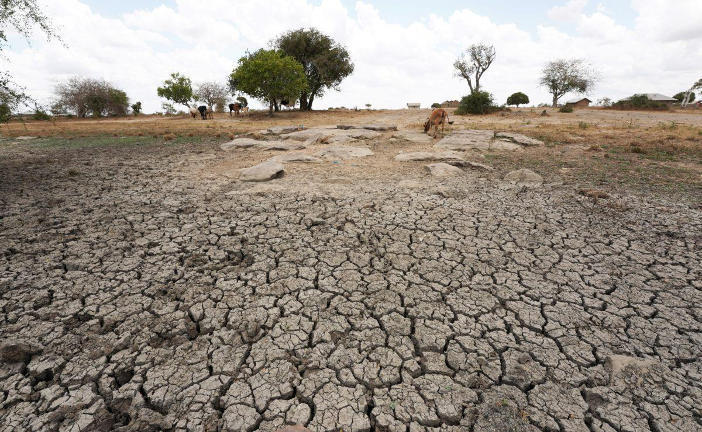
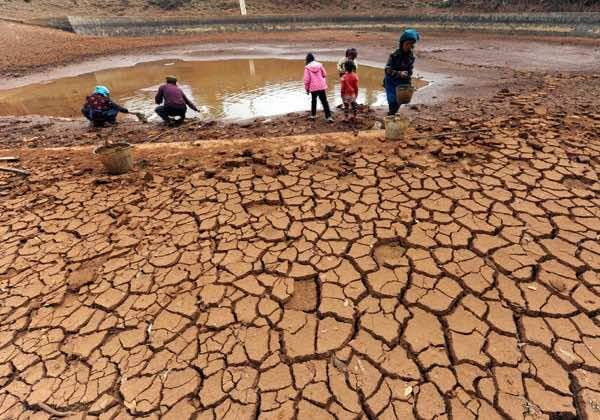
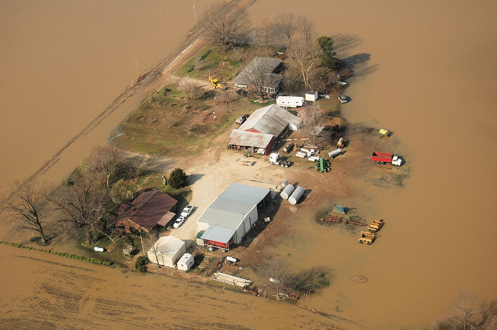

Natural Disasters in Namibia
Natural hazards do not affect every country in the same way. For Namibia, drought and flooding are especially useful examples because they can directly affect water, farming, livestock, roads, schools and households.
Drought in Namibia


Namibia has generally dry climatic conditions. During long periods of low rainfall, communities may experience pressure on water supplies, grazing, crops and household income.
Scenario
A farming community receives very little rain for two rainy seasons. What problems might occur?
- Less grazing for livestock.
- Lower crop yields.
- Water shortages.
- Loss of livestock.
- Higher food costs.
Flooding in Namibia


Heavy seasonal rainfall can cause flooding in parts of northern Namibia. Floods may affect roads, schools, homes, fields, livestock and access to services.
Discussion: How can schools and communities prepare when flooding is expected?
Compare Namibia with the world
| Natural disaster | Namibia | Global comparison |
|---|---|---|
| Flood | Important hazard in some northern areas | Common in river basins and storm-prone regions worldwide |
| Drought | Highly relevant | Common in many dry and semi-arid regions |
| Tornado | Less common | Major hazard in some countries |
| Earthquake | Lower activity than major plate-boundary regions | More significant in tectonically active regions |
| Volcano | No major active volcanoes today | Common in some tectonic settings |